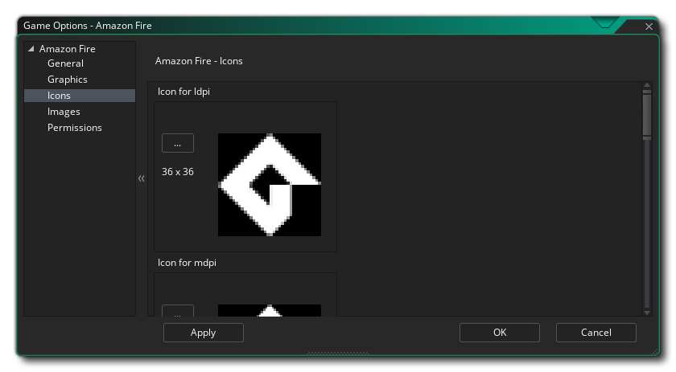
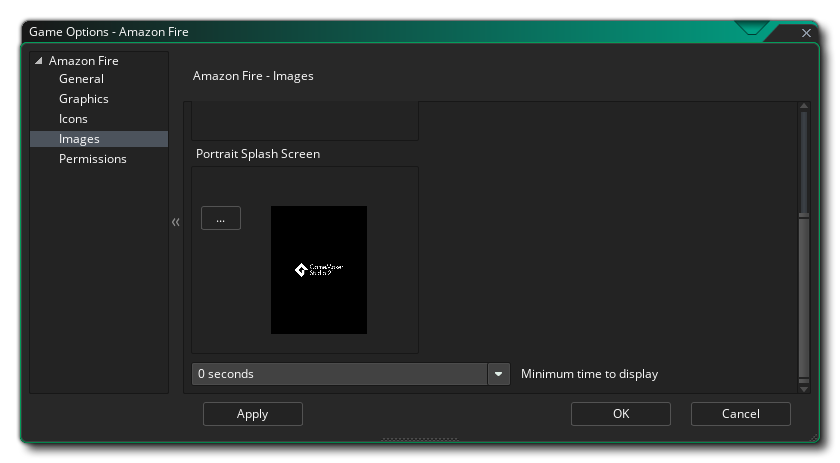

Cette section décrit les différentes options à votre disposition pour contrôler la manière dont vos projets de jeu Amazon Fire seront compilés. Les différentes sections sont:
La première partie de la section Général est consacrée aux informations sur le produit et aux paramètres de construction. Vous devez renseigner les informations sur le produit, qui comprennent le nom complet du projet, les informations sur son package, qui consistent en un domaine, une société et un produit. Les informations sur le package ne peuvent être composées que de lettres de A à Z et des chiffres de 0 à 9, sans aucun symbole ni autre caractère spécial, et ne doivent pas non plus être en majuscule. Ces informations seront ensuite utilisées pour générer un identifiant de package au format " com.company.myappname ".
REMARQUE: Si vous avez déjà configuré les options de jeu de la cible Android, vous pouvez cliquer sur le bouton "Synchroniser depuis Android " en haut pour transférer les informations pertinentes de la cible Android vers Amazon Fire.
Vous devez ensuite définir les versions des outils de compilation et de la bibliothèque de support technique, ainsi que les versions cible, minimale et compilée du SDK. Les outils de construction et la bibliothèque de support sont utilisés lorsque GameMaker Studio 2 construit votre jeu pour la cible Android et doivent être définis sur les valeurs appropriées en fonction des outils que vous avez installés à l'aide d' Android SDK Manager ou d' Android Studio.Le SDK cible indique que vous avez testé votre application sur la version que vous spécifiez ici (jusqu'à la version incluse). Il s'agit simplement de donner au Android exploitation Android une idée de la manière dont il doit gérer votre application en termes de fonctionnalités du système d'exploitation. Pour des raisons pratiques, la plupart des applications vont vouloir définir Target SDK sur la dernière version publiée de l'API (utilisée par le paramètre Compile SDK). Cela garantira que votre application aura la meilleure apparence possible sur Android appareils Android les plus récents.
La version minimale du Kit de développement logiciel (SDK ) est le niveau d'API minimum permettant d'exécuter votre projet. Depuis août 2018, Google a défini le niveau minimum requis pour l'API 26, mais si vous ajoutez des extensions, elles peuvent nécessiter un niveau API plus élevé.
La version du Kit de développement logiciel (SDK ) est la version de l’API avec laquelle le projet est compilé. Cela signifie que vous pouvez utiliser Android fonctionnalités de l'API Android incluses dans cette version de l'API. Si vous essayez d'utiliser les fonctionnalités de l'API 16 - par exemple - mais que vous définissez Compile SDK 15, vous obtiendrez une erreur de compilation. Cependant, si vous définissez le SDK de compilation sur 28, vous pouvez toujours exécuter l'application sur un périphérique API 23 (ainsi que toutes les versions précédentes également).
Vous pouvez sélectionner l'un des paramètres de cible prédéfinis en cliquant sur le bouton Pré-renseigner les valeurs du SDK au niveau d'API choisi, ce qui ouvrira une liste des différentes API à choisir. En sélectionnant l'un d'entre eux, tous les fichiers SDK seront renseignés avec les valeurs appropriées que vous pourrez ensuite utiliser ou modifier à votre guise.
REMARQUE: pour que vos projets soient compilés correctement, vous devez avoir installé les API appropriées dans Android SDK Manager ou via Android Studio.La deuxième partie de la section Général couvre les différentes Orientations sur lesquelles votre jeu peut être exécuté pour une expérience utilisateur optimale. Les options disponibles sont:
- Paysage
- Portrait
- Paysage retourné
- Portrait retourné
Enfin, vous avez les options diverses suivantes:
- Activer le support Bluetooth / iCade: Ceci ajoutera un support pour les gamepads bluetooth ou iCade à votre projet de jeu. Ceci est activé par défaut.
- Activer le support de la manette de jeu MOGA: Ceci activera la prise en charge des contrôleurs MOGA. Notez que toutes les fonctionnalités de MOGA sont accessibles via une extension. Lorsque vous cochez cette option pour la première fois, vous serez invité à télécharger et à installer l'extension MOGA à partir du Marketplace. Cette option est désactivée par défaut.
- Exécuter l’analyse du code de peluches: lorsque cette option est cochée, les outils de compilation exécutent une analyse du code de peluches au fur et à mesure de la création du projet, ce qui permet une vérification plus approfondie des erreurs et affiche plus d’informations dans la fenêtre de sortie lors de la compilation du projet Le fichier sera également créé, avec le chemin du fichier indiqué à la fin de la compilation dans la fenêtre de sortie). Notez que tout ce qui est signalé par l’analyse de la charpie comme une erreur n’est pas nécessairement problématique pour votre jeu. Si cette fonction est activée, le jeu ne sera plus compilé, même s’il est désactivé, il se compilera et fonctionnera correctement. Pour l’essentiel, il s’agit uniquement de débogage et l’option est désactivée par défaut.
- Emplacement d'installation: vous pouvez définir ici l'emplacement d'installation par défaut pour votre jeu. Cela peut être soit défini sur Automatique, auquel cas le jeu sera installé à l'emplacement choisi par l'utilisateur sur leur appareil, ou sur Préférer externe, qui tentera toujours d'installer le jeu sur le stockage externe de l'appareil..
Vous pouvez également définir la marge Amazon Fire Sleep ici. Cette option est liée à la réduction du bégaiement lorsque vous exécutez votre jeu sur des systèmes spécifiques. Fondamentalement, si votre jeu tourne plus vite que votre pièce, GameMaker Studio 2 "dormira" pendant le temps restant, mais ce sommeil peut être assez imprécis et vous pouvez souvent vous endormir plus longtemps que nécessaire, ce qui retardera provoque le bégaiement. Pour éviter ce problème, nous pouvons dormir moins longtemps, puis rester assis en boucle serrée le reste du temps pour le rendre plus précis - bien que le problème en restant assis en boucle soit que cela entraîne une augmentation de l'utilisation du processeur, ce qui peut à son tour augmenter la température de votre processeur et utiliser davantage de batterie pour votre appareil. Par défaut, cette valeur est définie sur 4 et cela convient dans 99,99% des cas. Toutefois, pour les périphériques bas de gamme ou pour les périphériques avec beaucoup de processus en arrière-plan en cours d'exécution, cette solution n'est peut-être pas idéale ni une valeur de 5 à 10 peuvent être nécessaires. Notez qu'il s'agit en réalité d'une configuration spécifique à un périphérique et que ce qui fonctionne sur votre périphérique de construction peut ne pas convenir à un autre utilisateur. Par conséquent, en cas de doute, laissez la valeur 4.
Ici, vous pouvez modifier les détails suivants liés à l'affichage de votre jeu. Les options suivantes sont disponibles:
- Interpoler les couleurs entre les pixels: active l'interpolation, qui "lisse" les pixels. Pour les graphismes nets en pixels, il devrait être désactivé, mais si vous avez de beaux mélanges alpha et des graphiques à bords lissés, il est préférable de les laisser. La valeur par défaut est désactivée.
- Profondeur de couleur de l'écran: Ceci peut être utilisé pour définir la profondeur de couleur pour le rendu sur 16 bits ou 24 bits. Cela affectera la compatibilité avec certains périphériques plus anciens s'il est défini sur 24 bits et augmentera également l' ashmem nécessaire (il s'agit de la mémoire partagée sur les périphériques Amazon Fire).
- Mise à l'échelle: vous pouvez choisir ici de redimensionner la zone de dessin en conservant les proportions au sein de l'écran du périphérique (en ajoutant un "remplissage" sur les bords pour l'adapter à l'écran) ou en sélectionnant un étirement de la zone de dessin.
Enfin, il est possible de définir la taille de la page de texture. La taille par défaut (et la plus compatible) est 2048x2048, mais vous pouvez choisir entre 256x256 et 4096x4096. Il existe également un bouton intitulé Aperçu qui générera les pages de texture pour cette plate-forme, puis ouvrira une fenêtre afin que vous puissiez voir à quoi elles ressemblent. Cela peut être très utile si vous souhaitez voir comment les pages de texture sont structurées et éviter d’avoir des pages de texture plus grandes (ou plus petites) que nécessaire.
REMARQUE: Sachez que plus la taille de la page de texture est grande, moins votre jeu sera compatible.

Cette section vous permet d'ajouter les différentes images d'icônes dont votre projet aura besoin pour les différentes pages de magasin et les différents périphériques. Toutes les images d'icônes doivent être créées sous forme de fichiers PNG 24 bits de la taille appropriée indiquée.
Il est à noter que GameMaker Studio 2 dispose d'un outil Project Image Generator qui peut être utilisé pour créer automatiquement toutes les icônes requises pour les différentes plates-formes cibles pour lesquelles votre jeu est compilé. Si vous utilisez cet outil, vous devez réviser les images créées pour vous assurer qu’elles correspondent à vos besoins.

Ici, vous pouvez ajouter un écran de démarrage à votre fichier de jeu final, pour les modes paysage et portrait, qui sera affiché pendant le chargement du jeu sur l'appareil. Cet écran doit être un fichier PNG 24 bits. Il est recommandé d’avoir la même taille que la première salle (ou vue) de votre jeu. Si vous souhaitez que l'écran de démarrage soit affiché pendant un temps spécifique, vous pouvez également le définir ici de 0 à 10 secondes (le temps par défaut de 0 signifie qu'il ne s'affichera que pendant la durée du chargement de l'actif).
Il est à noter que GameMaker Studio 2 dispose d'un outil Project Image Generator qui permet de créer automatiquement toutes les images requises pour les différentes plates-formes cibles pour lesquelles votre jeu est compilé. Si vous utilisez cet outil, vous devez réviser les images créées pour vous assurer qu’elles correspondent à vos besoins.
À partir de cet onglet, vous pouvez modifier certaines des autorisations que votre jeu peut demander dans le manifeste Amazon Fire. GameMaker Studio 2 attribuera automatiquement les autorisations selon vos besoins. Toutefois, vous pouvez avoir besoin d'une autorisation qui n'a pas été correctement attribuée à votre jeu (par exemple, lorsque vous utilisez des extensions personnalisées). Dans ce cas, cochez la case des autorisations requises. La liste ci-dessous répertorie ceux qui sont disponibles:
- WRITE_EXTERNAL_STORAGE: permettra à votre jeu d'écrire sur un stockage externe.
- READ_PHONE_STATE: Autoriser l'accès en lecture seule à l'état du téléphone.
- ACCESS_NETWORK_STATE: autorisez votre jeu à accéder aux informations sur les réseaux.
- INTERNET: permet à votre jeu d'ouvrir des sockets réseau.
- BLUETOOTH: permettra à votre jeu de se connecter à des appareils Bluetooth couplés.
- ENREGISTREMENT AUDIO: permettra à votre jeu d'enregistrer une entrée audio du microphone.
REMARQUE: si vous n’êtes pas certain d’avoir besoin de ces informations, vous devrez probablement les laisser non cochées par défaut et laisser GameMaker Studio 2 s’occuper des autorisations de votre jeu.